Department of Geography, TCU
November 16, 2026
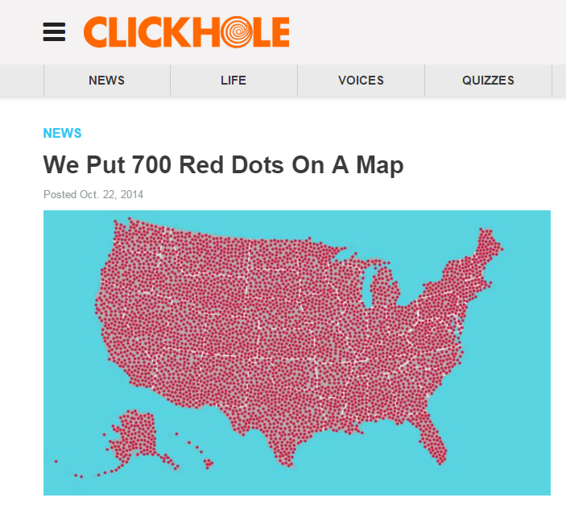
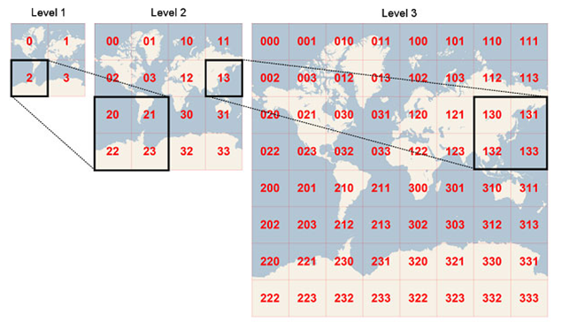
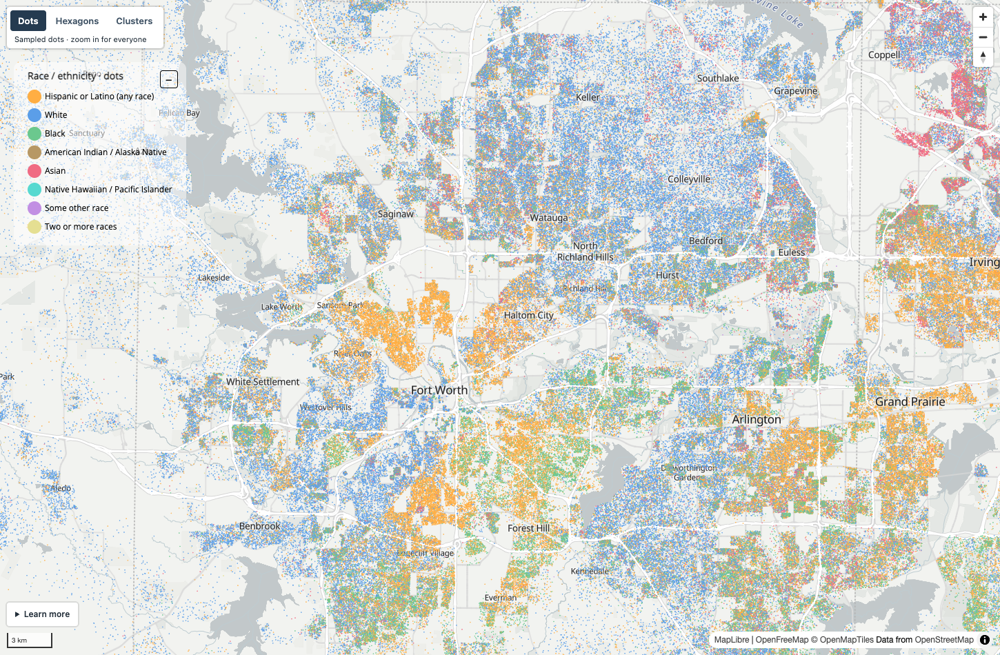
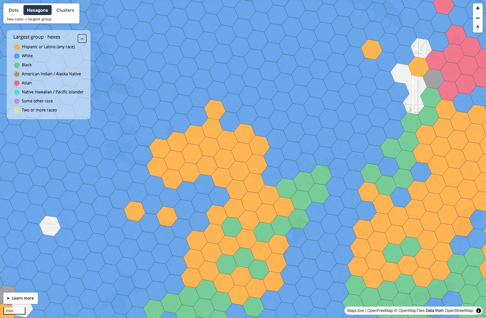
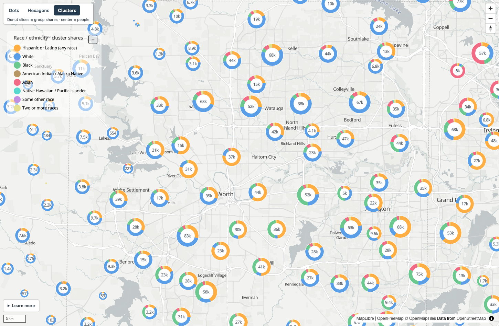
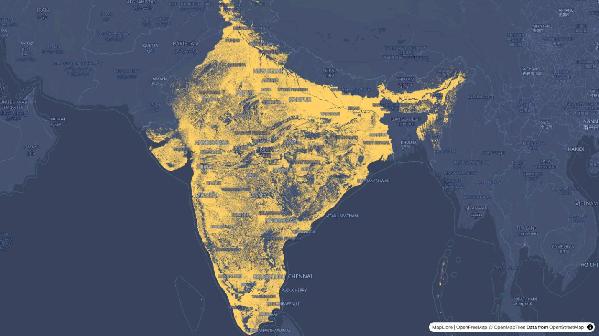
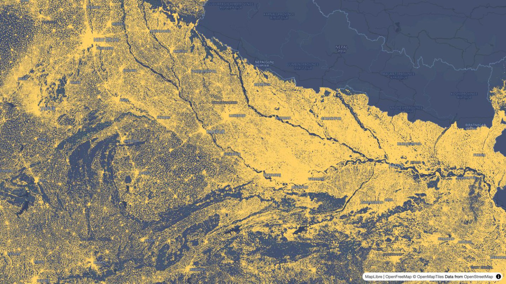
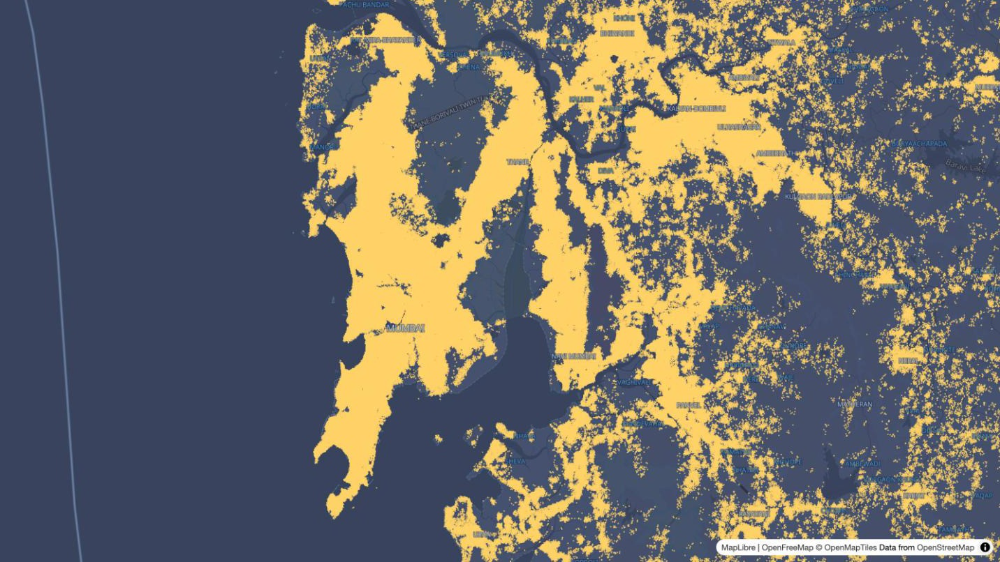
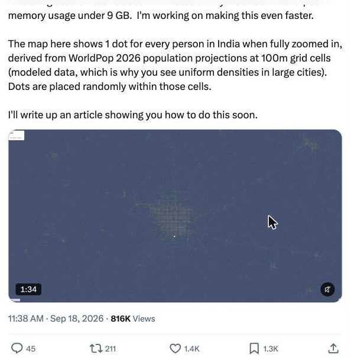
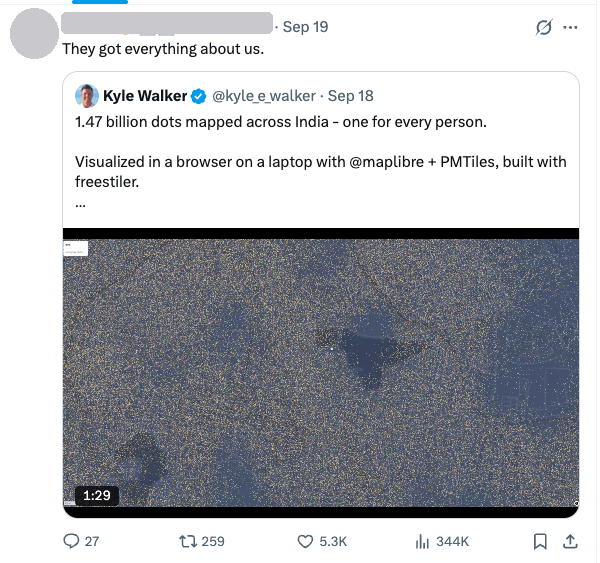
“I don’t remember giving consent to my data for this.”
“Everyone of you is marked digitally”
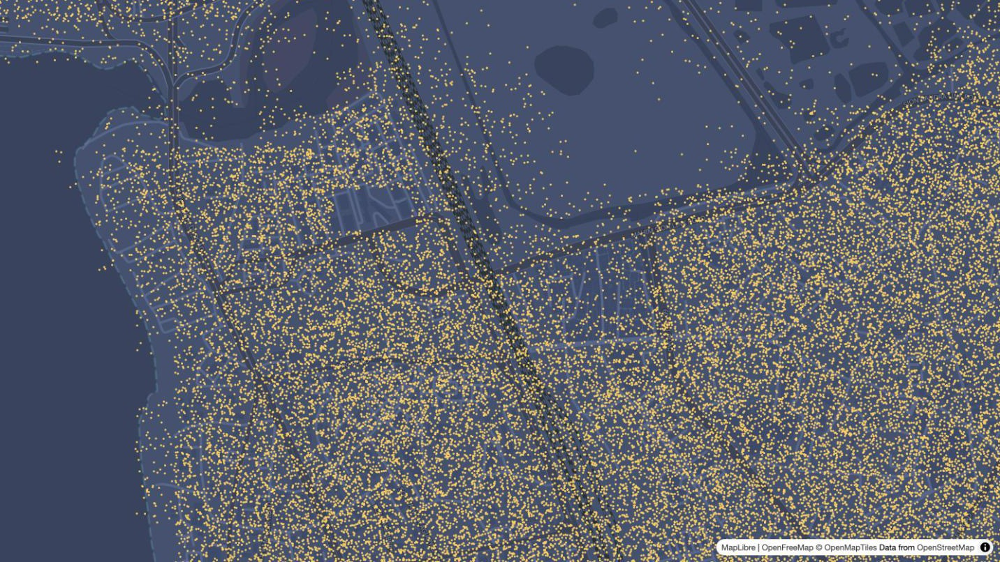
Kyle Walker
Professor & Chair of Geography, TCU
kyle@walker-data.com
Mapping Billions of Points | Kyle Walker